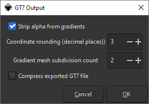
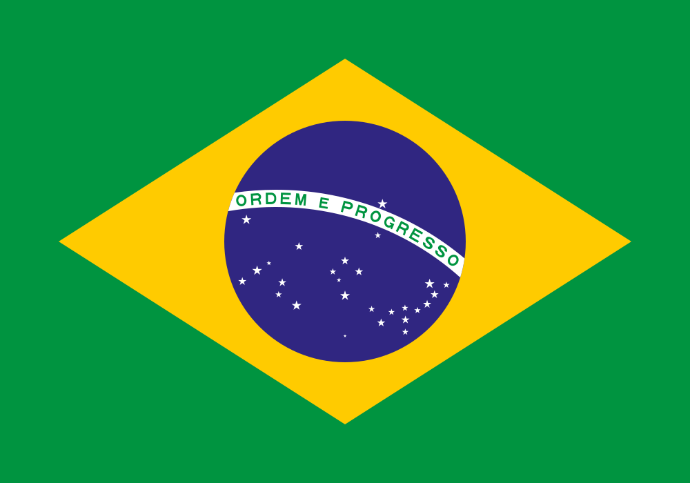

This program is free software: you can redistribute it and/or modify it under the terms of the GNU General Public License as published by the Free Software Foundation, either version 3 of the License, or (at your option) any later version.
This program is distributed in the hope that it will be useful, but without any warranty; without even the implied warranty of merchantability or fitness for a particular purpose. See the GNU General Public License for more details.
You should have received a copy of the GNU General Public License along with this program. If not, visit GNU Licenses
The conversion process aims to preserve the original appearance of the artwork as accurately as possible. Although the exported decal should look visually identical to the original design, the extension may perform extensive modifications to the underlying SVG document structure in order to ensure compatibility with the Gran Turismo 7 livery system.
GT7OE supports the conversion of various SVG 2.0 features, including fill patterns and markers, into equivalent SVG 1.1 geometry. It can also simplify paths, normalize gradients, and apply additional optimizations to prepare decals for use in the Gran Turismo 7 Livery Editor.
The extension is distributed under the terms of the GNU General Public License v3.0 (GPL-3.0). You are free to use this software for both personal and commercial purposes. If you create derivative works, particularly by incorporating parts of the source code into another project, you must either:
GT7OE is platform-independent and requires Inkscape 1.4 or later to be installed. Installation requires only a few simple steps:
Once GT7OE has been installed successfully, a new file type, Gran Turismo 7 (*.gt7), will appear in Inkscape's Save As dialog.
A file with the extension .gt7 will be created at the location selected in the Save As dialog. To upload this file to the Gran Turismo 7 Livery Editor, you must have an account on gran-turismo.com and follow the instructions provided there.
The Gran Turismo website accepts only files with the .svg extension. Before uploading your decal, rename the exported file, for example: my_design.gt7 to my_design.gt7.svg.
To convert SVG 2.0 content into SVG 1.1 format, while also applying the additional restrictions required by Gran Turismo 7, GT7OE performs extensive modifications to the original SVG document. Many of these transformations are destructive and cannot be reversed.
For this reason, it is strongly recommended that you save your artwork in the default Inkscape SVG format as a backup and then export a separate copy as a .gt7 file. GT7OE uses the .gt7 extension instead of .svg to reduce the risk of accidentally overwriting your original artwork.
GT7OE has been tested with a wide variety of SVG files. However, SVG is a complex format, and the conversion process may occasionally produce output that differs visually from the original artwork.
If this occurs, you can open the exported .gt7 file in Inkscape, make any necessary corrections manually, and then export it again using GT7OE.
Each time you save your artwork as a .gt7 file, Inkscape displays the dialog shown below, allowing you to configure parameters for the export process.

The default options are suitable for most designs. If you would like to fine-tune the export process or experiment with different settings, the options are explained below:
| Option | Description | Default |
|---|---|---|
| Strip alpha from gradients | Gran Turismo 7 may reject linear or radial gradients whose color stops contain transparency (an alpha channel). When this option is enabled, all gradient stop opacities are set to 1.0 (fully opaque) to improve compatibility. | True |
| Coordinate rounding (decimal places) |
This option has two benefits:
|
3 |
| Gradient mesh subdivision count | Mesh gradient support is currently experimental. Shapes filled with mesh gradients are subdivided into triangles, each approximated using linear gradients. A higher subdivision count produces more, smaller triangles and generally improves visual quality, but also increases file size. | 4 |
| Compress exported GT7 file | Produces a smaller, minified SVG file. Disable this option if you prefer human-readable output. Compression is intentionally conservative, and external SVG optimization tools can often reduce file size by an additional 20–40%. | True |
| Support | Feature | Conversion |
|---|---|---|
| Fully supported geometry elements (<rect>, <circle>, <ellipse>, <polygon>, <polyline>, <line>, <path>) |
Shapes are converted while preserving their visible geometry and presentation attributes. <rect>, <circle>, and <path> elements are retained whenever possible. All other geometry types are converted into <path> elements.
Because GT7OE resolves and removes all transformations, even <rect> and <circle> elements may be converted to paths when complex transformations are applied. |
|
| Styles | All styles (inline style attributes and CSS styles under the <style>) section are converted into plain presentation attributes. Presentation attributes ignored by the Gran Turismo 7 Livery Editor are removed to reduce file size. | |
| Units | All units (mm, cm, in, etc.) are converted to absolute pixel coordinates. | |
| Strokes |
Stroke attributes are removed if stroke is none or stroke-width is zero. This prevents the Gran Turismo 7 Livery Editor from displaying an unwanted default 1-pixel stroke.
Open paths used as strokes are preserved whenever possible. If clipping operations require geometric processing, they may be converted into closed paths. |
|
| Paint Order |
SVG 2.0 supports custom paint order, allowing fill, stroke, and markers to be rendered in a user-defined sequence.
When a non-default paint order is detected, GT7OE automatically separates the affected geometry into individual fill and stroke elements and arranges them accordingly. This preserves the original visual appearance while ensuring compatibility with the target format. |
|
| Glyphs and Fonts |
Fonts and glyphs are not supported by the Gran Turismo Livery Editor and cannot be uploaded directly.
GT7OE automatically converts all text, glyphs, and font-based elements into standard SVG paths. Depending on the complexity of the text, this conversion may substantially increase file size. However, it ensures that the artwork retains its intended appearance in the Livery Editor. |
|
| References via <use> | Referenced geometry is expanded and inlined into the document. This may substantially increase file size. | |
| Clippaths | Clip paths are resolved by applying the clipping geometry directly to the affected objects, after which the clip-path references are removed. | |
| Linear and radial gradients | Gradients are normalized to plain user-space coordinates. This may require individual copies of a gradient definition to be generated for each object that uses it, potentially increasing file size. In many practical designs, however, gradient simplification and normalization will reduce the overall file size. | |
| Mesh gradients | Mesh gradients cannot be represented directly in SVG 1.1 without affecting their appearance. GT7OE triangulates mesh-filled geometry and approximates the color variation within each triangle using a linear gradient. The result may exhibit visible faceting or color discontinuities, although acceptable results can often be achieved through manual post-processing. | |
| Pattern | Pattern are converted into plain geometry. This may subtatially increase file size, but many practical pattern designs with a limted number of tiles can still be converted while remaining within Gran Turismo's file size limits. | |
| Marker | Marker are converted into plain geometry. This may substantially increase file size. Many practical designs like placing an arrow head on a line can still be converted while remaining within Gran Turismo's file size limits. | |
| Filter | Filter are not supported and will be removed from the file. | |
| Masks | Masks are not supported and will be removed from the file. |
As shown above, GT7OE can convert most commonly used SVG 2.0 features into SVG 1.1.
During export, all transformations are resolved and all groups are removed from the document structure. The resulting flat list of geometry elements is then reorganized and grouped by shared presentation attributes to help reduce file size.
Because many of the transformations performed by GT7OE are destructive, it is strongly recommended that you always save your artwork as a standard Inkscape SVG file before exporting a .gt7 version. Keeping an editable source file allows you to continue modifying your design without the limitations introduced by the conversion process.
Exported files are given a .gt7 extension to reduce the risk of accidentally overwriting the original SVG file. Despite the custom extension, these files remain valid SVG 1.1 documents and can be opened in Inkscape without modification. If desired, you can associate the .gt7 extension with Inkscape in your operating system.
Before uploading a file to the Gran Turismo website, append the .svg extension to the exported file name (for example, my_design.gt7.svg to avoid name collisions with the original file). Otherwise, the upload dialog will not display the file.
Note: When you save this artwork as .gt7 file, you will see a warning dialogue, as Inkscape could not preprocess the file - you can safely ignore this warning as there is nothing in the file that would require preprocessing. During the conversion process your screen may flicker twice, as for technical reasons clipping requires to launch an Inkscape process and the file contains two clip paths.
To reduce the file size, manual optimization in Inkscape can be performed. A good first step is to combine similar geometry into as few paths as possible. Let's start with the white stars.
Let's start with the white stars. You will see that after expansion of the <use> tags each star is composed of multiple non-closed triangles. You need to select each of these strokes, select the two end points and join them with a new path segment to close the path. When you are finished, select all parts of the star and join them into a single shape (Path → Union). The fastest way to do this in Inkscape is:

Show optimized SVG source
<svg xmlns="http://www.w3.org/2000/svg" width="1000" height="700" viewBox="0 0 4200 2940"><path fill="#009440" d="M0 0h4200v2940H0Z"/><path fill="#ffcb00" d="m357 1470 1743 1113 1743-1113L2100 357Z"/><circle cx="2100" cy="1470" r="735" fill="#302681"/><path fill="#fff" d="M1676.83 1155a1785 1785 0 0 0-249.11 17.92 735 735 0 0 0-39.18 112.56 1680 1680 0 0 1 1413.01 403.71 735 735 0 0 0 26.21-116.26A1785 1785 0 0 0 1676.83 1155"/><path fill="#009440" d="m1710.2 1172.47-2.44 69.96 62.96 2.2.46-12.99-50.97-1.78.63-17.99 39.97 1.39.42-11.99-39.98-1.39.49-14 47.97 1.68.46-12.99zm-59.55.27-32.99.58 1.22 69.99 32.99-.58a30 30 0 0 0 29.48-30.52l-.18-9.99a30 30 0 0 0-30.52-29.48m-84.47 3.41-39.9 2.79 3.88 69.9 12.97-.91-1.81-25.94 27.86-1.94c7.06 6.78 7.9 18.8 8.37 25.47l11.97-.83c-.55-7.82-1.61-23-9.25-28.69a22 22 0 0 0-14.09-39.85m236.49.33-6.1 69.73 11.95 1.05 4.18-47.82 9.77 49.04 10.96.96 18.13-46.6-4.19 47.82 11.96 1.04 6.1-69.73-17.44-1.52-18.13 46.59-9.76-49.03zm-333.77 8.99a35.001 31.501 83 0 0-4.3.2 35.001 31.501 83 0 0 8.53 69.48 35.001 31.501 83 0 0-4.23-69.68m180.98.29a19 19 0 0 1 19.33 18.66l.1 6a19 19 0 0 1-18.66 19.33l-19 .34-.77-44zm-83.79 3.43a9 9 0 0 1 1.26 17.95l-26.94 1.89-1.25-17.96zm-97.4 9.32a22 18.5 83 0 1 2.85 43.74 22 18.5 83 0 1-5.36-43.67 22 18.5 83 0 1 2.51-.07m483.58 1.98-10.67 62.09 51.74 8.88 2.03-11.82-39.91-6.86 2.71-15.77 32.52 5.59 2.03-11.83-32.52-5.59 2.4-10.84 38.15 6.65 2.03-11.83zm140.93 20.67-18.68 67.52 12.59 3.26 6.51-25.17 27.11 7.01a22 22 0 0 0 11.01-42.6zm8.18 15.59 26.14 6.76a9 9 0 0 1-4.42 17.43l-26.23-6.76zm81.03 8.39-22 66.46 12.39 3.91 7.82-24.8 26.63 8.39c4.1 8.9.48 20.4-1.54 26.78l11.44 3.61c2.36-7.48 6.94-22 1.9-30.09a22 22 0 0 0 1.51-42.23zm7.53 16 25.76 8.12a9.003 9.003 0 0 1-5.42 17.17l-25.75-8.12zm100.63 21.53a35.001 31.5-69.5 0 0-16.09 67.33 35.001 31.5-69.5 0 0 24.51-65.57 35.001 31.5-69.5 0 0-8.42-1.76m-1.07 13.02a22 18.5-69.5 0 1 4.94.92 22 18.5-69.5 0 1-15.14 41.21h-.27a22 18.5-69.5 0 1 10.47-42.13m82.69 21.22a35 31.5-66.5 0 0-15.31 66.38 35 31.5-66.5 0 0 23.47-.07l-3.76 8.64 9.17 3.99 9.97-22.93 3.98-9.15.01-.01a35 31.5-66.5 0 0 0-.01l-9.17-3.98-2.75-1.2-12.38-5.38-3.99 9.17 10.53 4.58a22 18.5-66.5 0 1-19.9 4.43 22.002 18.502-66.5 0 1 17.55-40.35 22 18.5-66.5 0 1 10.23 15.35l12.91 5.62a35 31.5-66.5 0 0-17.96-32.89 35 31.5-66.5 0 0-12.6-2.19m69.17 27.69-32.13 62.19 11.63 5.81 11.61-23.27 25.05 12.49.02.01c2.63 9.42-2.82 20.19-5.8 26.16l10.74 5.35c3.48-6.98 10.22-20.49 6.64-29.28a22.003 22.003 0 0 0 8.04-41.62zm4.94 16.98 24.16 12.05a9.001 9.001 0 0 1-8.03 16.11l-24.16-12.05zm76.64 24.55-34.47 60.93 54.83 31.02 6.41-11.31-44.39-25.12 8.86-15.66 34.82 19.69 5.91-10.44-34.01-19.7 6.09-12.18 41.77 23.63 6.4-11.31zm85.45 55.02c-5.66-.08-11.25 2.17-15.66 8.92-13.64 20.95 30.62 38.48 22.96 50.5-2.42 3.79-8.16 3.98-16.6-1.39s-12.25-11.95-8.49-17.86l-13.28-8.46c-9.44 14.73 5.05 29.3 14.75 35.48 11.38 7.25 28.44 13.97 38.25-1.42 13.3-20.87-30.08-39.32-23.56-49.1 3.89-6.11 9.21-4.21 15.74-.05 6.75 4.3 11.18 10.38 7.14 16.71l12.87 8.19c9.48-14.41-2.71-26.93-10.3-31.76-4.74-3.02-14.39-9.63-23.82-9.76m75.05 50.63c-4.94.21-9.82 2.41-13.99 8.1-14.72 20.21 28.75 40.03 20.29 51.63-2.62 3.66-8.35 3.56-16.5-2.25s-11.61-12.58-7.54-18.28l-12.83-9.14c-10.2 14.22 3.51 29.52 12.87 36.2 10.99 7.84 27.68 15.44 38.28.59 14.37-20.15-27.72-40.85-20.96-50.27 4.21-5.9 9.41-3.72 15.72.78 6.52 4.64 10.62 10.95 6.62 17.05l12.06 8.86c10.22-13.9-1.29-27.04-8.62-32.26-4.59-3.26-13.87-10.36-23.28-10.99-.71-.04-1.42-.05-2.12-.02m76.42 58.73a35 31.5-51.5 0 0-23.14 61.01 35.001 31.501-51.5 1 0 43.58-54.78 35 31.5-51.5 0 0-20.44-6.23m2.82 12.92a22.002 18.502-51.5 0 1 9.52 3.48 22.002 18.502-51.5 0 1-27.39 34.44 22.002 18.502-51.5 0 1 17.87-37.92"/><path fill="#fff" d="m2328 1210.5-7.07 21.77h-22.53l18.18 13.39-7.09 21.82 18.61-13.52 18.41 13.52-7.07-21.76 18.52-13.45h-22.89zm-828 96-7.07 21.77h-22.53l18.18 13.39-7.09 21.82 18.61-13.52 18.41 13.52-7.08-21.76 18.53-13.45h-22.89zm800 105.5-4.72 14.51h-14.98l12.12 8.85-4.76 14.63 12.34-8.96 12.34 8.96-4.72-14.51 12.35-8.97h-15.25zm-480 61.75-5.89 18.14h-18.71l15.08 11.14-5.91 18.21 15.42-11.22 15.44 11.22-5.9-18.14 15.43-11.21h-19.07zm280 88-5.9 18.14h-18.8l15.18 11.16-5.91 18.19 15.43-11.21 15.43 11.21-5.89-18.14 15.43-11.21h-19.07zM1637 1587l-3.36 10.37h-10.91l8.82 6.41-3.37 10.35 8.82-6.4 8.82 6.4-3.37-10.36 8.82-6.4h-10.9zm-72 28.5-7.07 21.77h-22.53l18.17 13.39-7.08 21.82 18.61-13.51 18.41 13.51-7.07-21.77 18.52-13.44h-22.89zm620 12.25-5.9 18.14h-18.8l15.18 11.17-5.91 18.18 15.43-11.21 15.43 11.21-5.89-18.13 15.43-11.22h-19.07zm-159 5.25-4.72 14.51h-14.98l12.12 8.85-4.76 14.63 12.34-8.96 12.34 8.96-4.72-14.51 12.35-8.97h-15.25zm-551 53.75-5.89 18.14h-18.81l15.17 11.16-5.9 18.19 15.43-11.21 15.43 11.21-5.89-18.14 15.43-11.21h-19.08zm588 3.25-3.37 10.37h-10.9l8.82 6.4-3.37 10.36 8.82-6.4 8.82 6.4-3.37-10.36 8.82-6.4h-10.9zm-345 3.75-5.89 18.14h-18.71l15.08 11.15-5.91 18.2 15.43-11.21 15.43 11.21-5.89-18.14 15.42-11.21h-19.07zm897 2.75-7.07 21.77h-22.53l18.18 13.39-7.09 21.82 18.61-13.52 18.41 13.52-7.07-21.75 18.52-13.46h-22.89zm102 17.5-4.72 14.51h-14.98l12.12 8.85-4.76 14.63 12.34-8.96 12.34 8.96-4.72-14.51 12.35-8.97h-15.26zm-72 52.75-5.9 18.14h-18.8l15.18 11.17-5.91 18.18 15.43-11.21 15.43 11.21-5.89-18.13 15.43-11.22h-19.07zm-545 1.75-7.07 21.77h-22.53l18.18 13.39-7.1 21.82 18.62-13.52 18.42 13.52-7.08-21.76 18.52-13.45h-22.9zm-404 3.5-4.72 14.51h-14.98l12.12 8.84-4.76 14.64 12.34-8.97 12.34 8.97-4.72-14.51 12.35-8.97h-15.26zm904 53.75-5.89 18.14h-18.81l15.17 11.16-5.9 18.19 15.43-11.2 15.43 11.2-5.89-18.14 15.43-11.21h-19.08zm-795 2.75-7.07 21.77h-22.53l18.18 13.39-7.09 21.82 18.61-13.51 18.41 13.51-7.07-21.76 18.52-13.45h-22.89zm660 25.5-4.72 14.51h-14.98l12.12 8.85-4.76 14.63 12.34-8.96 12.34 8.96-4.71-14.51 12.34-8.97h-15.26zm-203 7-4.72 14.51h-14.98l12.12 8.85-4.76 14.63 12.34-8.97 12.34 8.97-4.72-14.51 12.35-8.97h-15.25zm279 7-4.72 14.51h-14.98l12.11 8.84-4.75 14.64 12.34-8.96 12.34 8.96-4.72-14.51 12.35-8.97h-15.25zm-158 11-4.72 14.51h-14.98l12.12 8.84-4.76 14.64 12.34-8.96 12.34 8.96-4.72-14.5 12.35-8.98h-15.25zm85 41.75-5.9 18.14h-18.8l15.18 11.17-5.91 18.18 15.43-11.21 15.43 11.21-5.89-18.14 15.43-11.21h-19.07zm-148 18-5.9 18.14h-18.8l15.18 11.17-5.91 18.18 15.43-11.21 15.43 11.21-5.89-18.14 15.43-11.21h-19.07zm147 61.25-4.72 14.51h-14.98l12.12 8.85-4.76 14.63 12.34-8.96 12.34 8.96-4.72-14.51 12.35-8.97h-15.26zm-367 34.5-2.35 7.26h-7.55l6.45 4.73-2.72 7 6.17-4.48 6.17 4.48-2.36-7.25 6.18-4.48h-7.64z"/></svg>